The Glean Assistant is a part of Glean's generative AI products. It's designed to function similarly to a knowledgeable colleague within the company, providing personalized responses based on the company's knowledge and work graph.
The primary entry point for interacting with the Assistant is through Glean Chat, which enables users to ask questions and receive answers as if they were consulting a fellow employee. This feature is aimed at harnessing the collective knowledge of the organization to assist users in various tasks, such as summarizing projects, identifying subject matter experts, and providing updates on topics of interest.
Go to https://app.glean.com/chat.
Because Glean is a logged in experience and this is the first time you've accessed the platform, you will be redirected to the Glean login page. If you're already logged in, you can proceed to the next step.

Enter the credentials provided for you by the Workshop Moderator. First enter the email address into the Work email field and click the Log in button.

You will be presented with a screen similar to the following. Enter the password provided by your Workshop Moderator and click the Sign in button. You will then be redirected back to the Glean Assistant.

From here we can interact with your company data via a conversation interface similar to how ChatGPT works.
This is a private sandbox instance of Glean that was set up for this workshop and has various data sources connected and indexed. Some of this include but are not limited to:
- Glean Website Data (glean.com, help.glean.com, and developers.glean.com)
- Publicly available Glean Technical information in the form of Google Docs
- Etc....
You'll see from the interface that you can start a conversation from scratch with the Glean Assistant.

In the next section we'll start our first conversation with Glean Assistant. Go ahead and click on Next below.
Let's see if Glean Assistant can help us understand how crawling/indexing works within the Glean Platform.
Enter the following in the conversation window and hit Enter or click the  button:
button:

The Glean Assistant will now perform a few things for you under the covers:
- Ascertain the context of the natural language query and convert it to one or more enterprise searches against the indexed company corpus.
- Execute the enterprise search(es).
- Read the top results (As you recall the Workshop Moderator explained how Relevancy works within Glean to provide Accurate/Contextual results).
- Match the read documents with the context of the original query.
- Send the relevant snippets from the document to the Large Language Model (LLM) for content generation.
- Present the results with citations.
Once the generation is complete, let's go back and navigate through the interface to see the flow provided above in Step 2.
Right underneath your question, you should see something similar to the following showing the search(es) that were executed, and the documents that were read. You may need to click the carrot next to Show thinking to expand and see the steps that Glean performed based on your query.

You should also see a natural language summary explaining how Glean supports crawling content from both Confluence and Sharepoint. It may also respond telling you that Glean supports crawling over 100 source applications or may tell you how the source application connectivity works.
Glean limits and/or completely removes the concerns around LLM hallucinations by searching only content within your company's corpus as well as citing all content within the answer provided. Hover over any of the citations similar to what is shown below to learn the detail of the citation. All citations are clickable to send you directly to the source.

If the citation was from a document authored by a user within your organization you would also see the Author and be able to click the Author link to be able to learn more about the author themselves. Since this is a public citation from a crawled website (help.glean.com and developers.glean.com) we do not see the authorship in this instance.
However, since its public documentation one can assume Authoritative Authorship.
You'll also notice suggested prompts for continued follow-up / learning. An example of what might popup is shown below:

For the purposes of this workshop, ignore the suggested prompts and type this follow-up question in the conversation window:

You'll see the conversation continue. The context of the new response will take into account the previous question/answer to narrow down your knowledge query. Right below your follow-up question, you'll see that the search remembered the context (Confluence & Sharepoint) and used that context for the enterprise search to drive your new results:
To show the power of LLM Generation with highly relevant data, let's ask Glean Assistant to write an email with the above information but formatted as a table.
Enter the following in the conversation window:
(Replace put your first name here with your actual first name - remove the brackets as well). Your screen should look similar to the following:

The response should be a table formatted response that you could choose to copy/paste into your favorite email program. In this instance of Glean there is a configuration which integrates directly with Gmail. This could also integrate with Outlook for customers using Microsoft Solutions.
The data may look similar to the following (depends on if updated content exists from the time of creating this workshop lab):

You can see how the power of the world's leading Enterprise Class Out-of-the-box (OOTB) Retrieval Augmented Generation (RAG) architecture from Glean coupled with the capabilities of the LLM can provide extreme value for users.
If this was a real scenario, you could then click the  icon in the lower right corner of the Assistant response which will copy the table to the clipboard. From there you could paste it into an email program final edit before sending. (Unnecessary if you're Glean instance has been set up to integrate with your email program directly)
icon in the lower right corner of the Assistant response which will copy the table to the clipboard. From there you could paste it into an email program final edit before sending. (Unnecessary if you're Glean instance has been set up to integrate with your email program directly)
Let's switch gears and execute some queries surrounding HR related issues. A few mocked up documents for a fictitious company were indexed surrounding company policies including HR related policies. Let's ask questions related to those documents.
Click the New chat button in the top left of the screen to remove all previous context and start a new conversation.

Enter the following text into the conversation window similar to what is shown below:

Let's ask a follow-up question:
Notice the result....

While it seems that the platform didn't do a good job answering the question, it's actually quite accurate and what our customers have enjoyed from the platform. The Glean Platform did not "hallucinate" by guessing at an answer when there were no documents explicitly discussing blackout dates and/or busy periods. The Glean platform instead clearly stated that there are no documents available discussing this topic and provides a suggested next step for them.
In this case, the HR department would take the question and recognize that no documents exist to answer questions such as this which can be easily rectified by a new version of the HR policy document.
Scroll up to the first question in this conversation. You'll notice that the Assistant read various documents to answer the PTO policy question. In the "Reading" section, find the document called "(Demo) CGo. Leave Policy Overview.docx" and click on it to open the document in another tab. Refer to the below image for assistance (You may have to expand the "Search" portion under the original query to see the searches and documents being read).

Inspect the document, specifically refer to the "Sabbatical Leave" section of the document. Notice how the paragraph discusses the terms of a Sabbatical Leave, but does not provide context/options for what an employee might do during a Sabbatical...
Now that we know the authoritative document on Sabbatical Leaves does not discuss this, let's ask the question anyway and see the results.
If you have installed the Glean extension, quickly try pressing Cmd+J (Mac) or Alt+J (Windows) to popup a sidebar.
Switch back to the Chat | Glean browser tab and enter the following into the conversation window as shown:

Notice how one of the documents that was read in order to generate the results has an icon with a dialog box and checkmark.

That icon means the document is an Answer that was created for this specific question because none of the documents in the company corpus contain information on how employees have used their Sabbatical Leave (And clearly someone else asked HR directly and therefore an Answer was created).
Answers can be manually created by users with the appropriate Role, however, Answers are also automatically generated by the platform during content indexing. Consider the following conversation in Glean's Internal Production Instance of the Glean Platform (Yes Glean eats their own dog food).
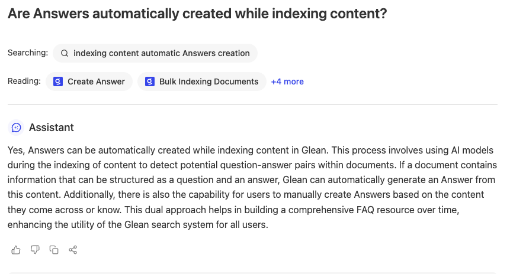
As you can see the Glean platform uses AI models during indexing to automatically create Answers to support common FAQs that already exist within your company corpus.
In the Sabbatical conversation earlier, click the Answer Citation similar to what is shown below:
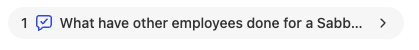
This will redirect you to the created Answer itself for more details.
Hover over Workshop Glean user to create a Card Popup with information surrounding the Author of this Answer as shown below.
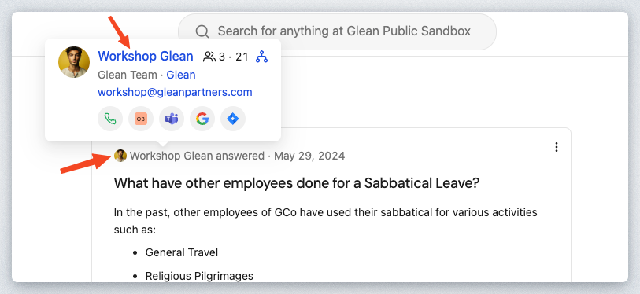
Click the Workshop Glean name in the Card Popup to navigate to the user details.
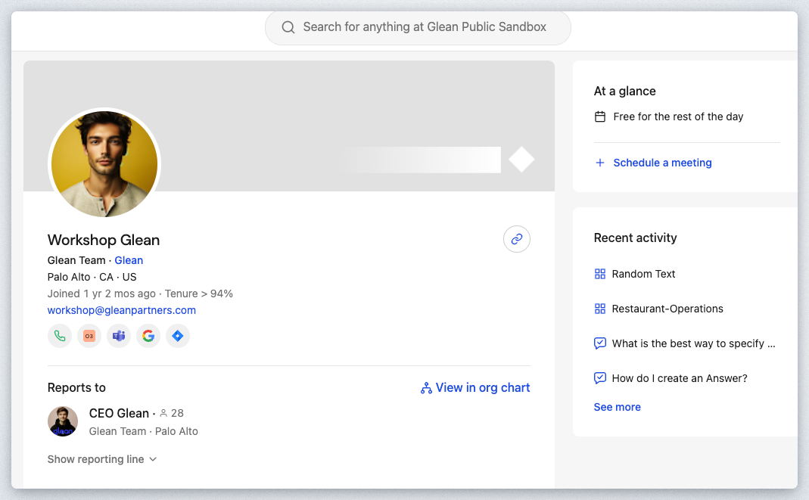
What you see is a page dedicated to this specific user (which in a production deployment would represent an employee or contractor at your company). You can see contact information, the users reporting line, and any recent activity surrounding your company knowledge this user has been involved in.
After exploring the user on this page, click the View in org chart link.
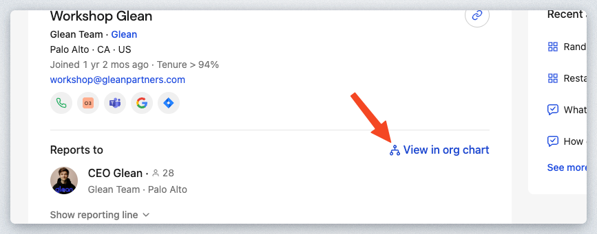
You will be redirected to the Org Chart feature of the Glean Platform.
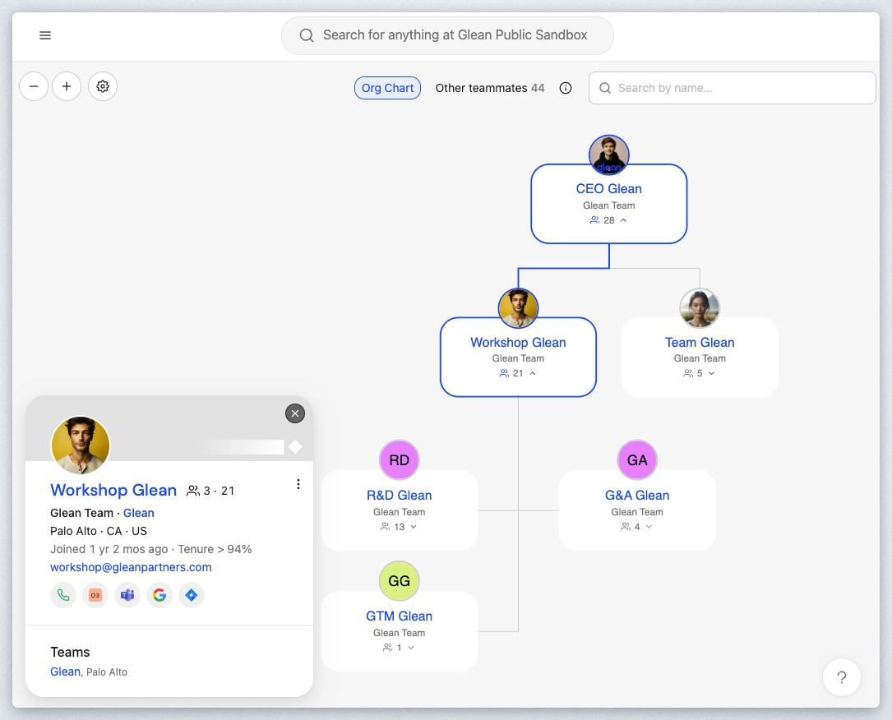
In this Org Chart, you will first see the current user in context which will highlight the Workshop Glean user and the user's reporting line. Since this is a Sandbox Instance, there are only a few users available. However, in a production deployment, your entire company hierarchy would be available.
Feel free to navigate around this page to ascertain its features.
You can directly access this feature from the Glean Platform Menu on the left side of the browser window. Hover over the People (Directory) icon as shown to see this navigation location:
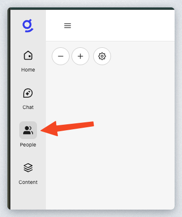
Now that you've had a chance to chat with Glean Assistant, let's see some of the other features that are available. Click on New chat on the top left to start a new session.

Click on the plus ‘+' sign in the chat box to see some options.
Tag People or Documents

Select Tag people or docs. This will insert an @ symbol into the chat box and allow you to include people or a document that has been crawled or indexed into the conversation with Glean Assistant.
Go ahead and type in the following after the @ symbol and select the first result
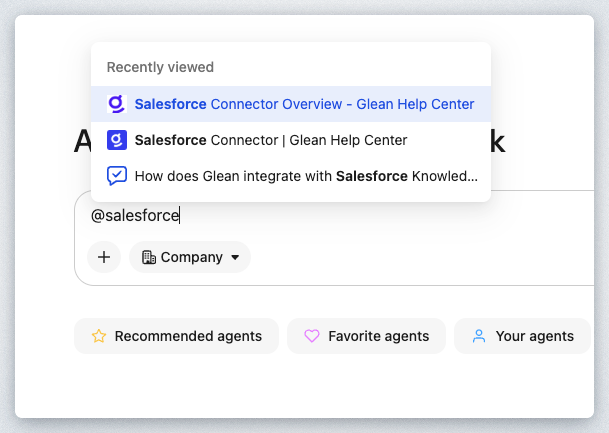
The chat box should look like the following below. Go ahead and click on the Send button to see the response.

As you can see, Glean allows you to filter the chat context down to a specific resource.

Because your content is already crawled and indexed, it saves you valuable time from having to upload any documents.
Filter Data
Click on New chat on the top left to start a new session and see what Filter data allows you to do with Glean Assistant.
Click on the plus ‘+' sign in the chat box and select Filter data this time.
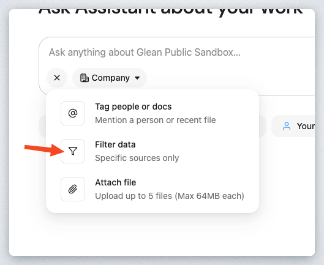
You'll see a list of available data sources this time. This is similar to the list of indexed sources on the right side of the SERP page. Select Glean Docs or a source that your workshop instructor will suggest.
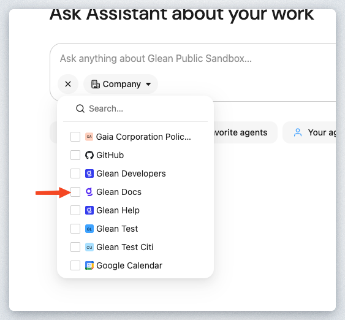
Instead of chatting with Glean Assistant on a single document, you can select multiple sources and provide a larger context of information for Glean Assistant to synthesize a response.
Attach File
Let's learn about the Attach file option. You can either use the current chat session or just start a new one.
Before starting a conversation with Glean Assistant, let's get a file to use. For this lab, you can download one by right-clicking on this link here and select Save link as.... Be sure to remember where you save it.

Next, click on the plus ‘+' sign in the chat box and select the Attach file option.

Find the file that you just downloaded and select it to be uploaded. Once the file is uploaded, type in the following and click on Send.

The response from Glean Assistant should look like the following below.
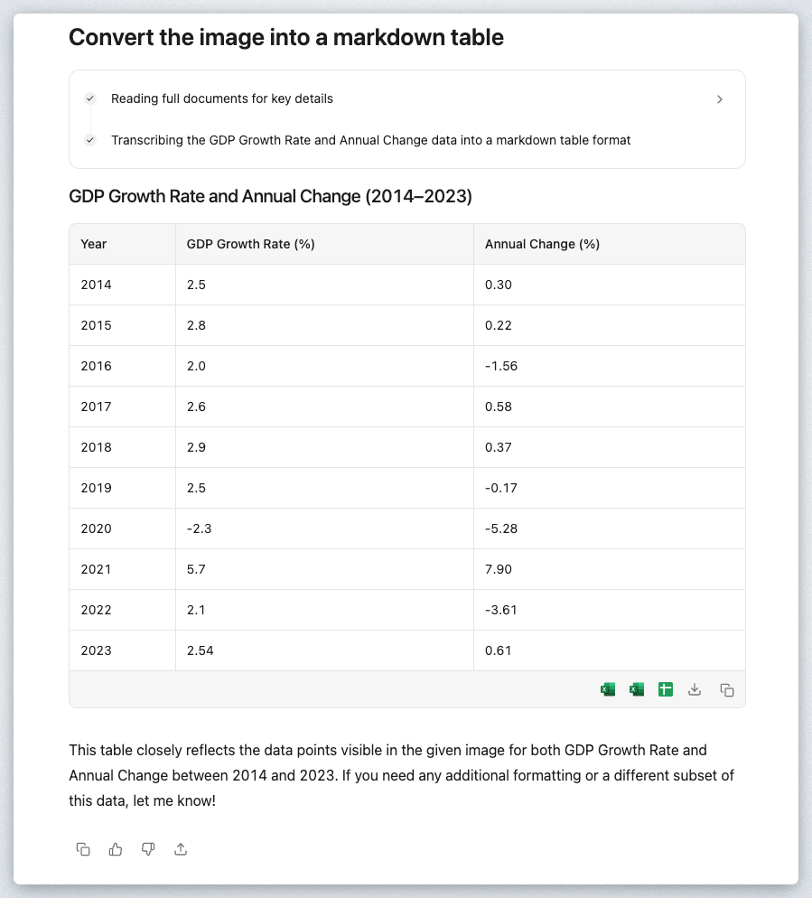
By attaching a file, this allows you to have a conversation with Glean Assistant using content that isn't crawled or indexed yet by Glean. You can upload 5 files with a maximum of 64MBs for each file. A list of supported filetypes can be found here.
The last feature to check out before we wrap up this workshop is World knowledge. Click New chat on the top left and then click on Company in the chat box.
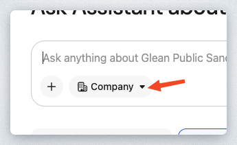
In the drop down, select World knowledge and click on the option Always search the web.
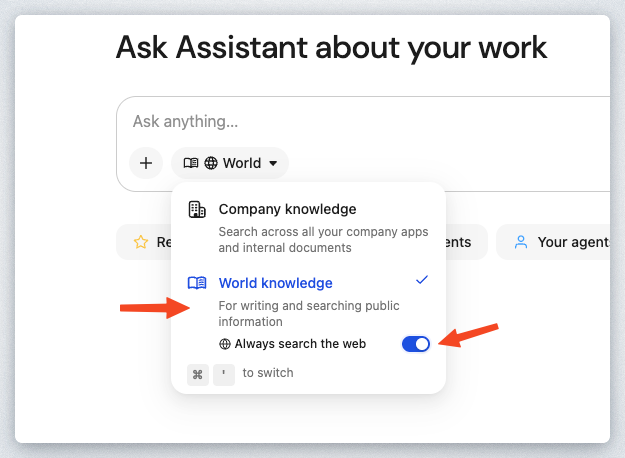
Type the following into the search box now but replace the city with your location for today's workshop.
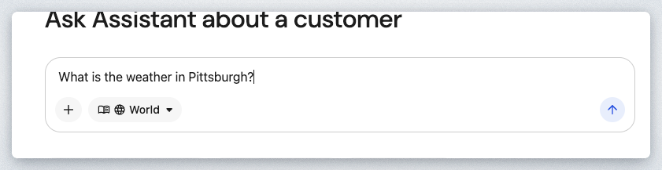
Click Send. You should get something similar to the screenshot below.
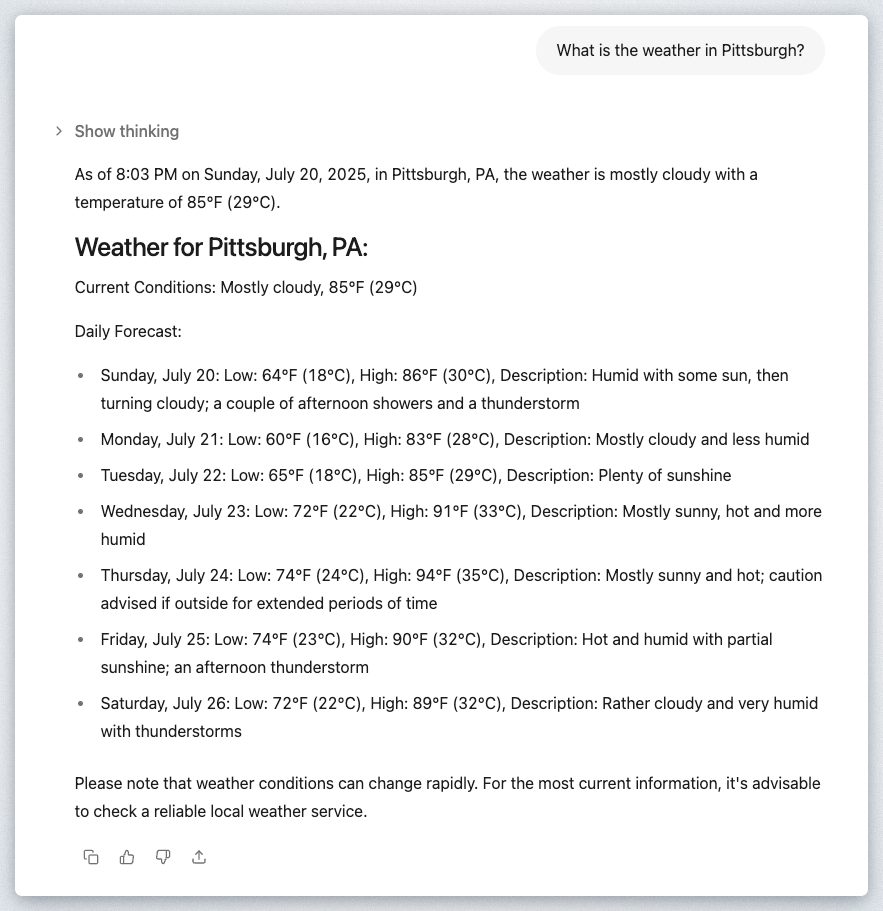
While Glean defaults to search Company knowledge when running searches, you can also have Glean Assistant synthesize a response to a question using a web search. We'll see the benefit of this later when we build an Agent in Glean. This allows you to combine content from internal and external sources to generate the best response or analysis possible.

In this lab, you experienced firsthand how Glean Assistant revolutionizes enterprise knowledge access through intelligent AI-powered conversations. You learned to interact with Glean Chat as you would with a knowledgeable colleague, asking natural language questions and receiving precise, well-sourced responses drawn from your organization's indexed content.
Throughout your hands-on exploration, you witnessed Glean's advanced Retrieval Augmented Generation (RAG) architecture in action. You saw how the Assistant seamlessly converted your queries into targeted enterprise searches, maintained conversational context across multiple exchanges, and presented information in various formats—from detailed explanations to structured tables ready for business communication.
Your investigation of HR policies demonstrated one of Glean's most valuable characteristics: its commitment to accuracy over speculation. When you asked about blackout dates that weren't documented in company policies, the Assistant transparently acknowledged the information gap rather than fabricating an answer. This honest approach, combined with the platform's ability to automatically generate Answers for common questions, shows how Glean continuously improves to meet your organization's evolving knowledge needs.
You also explored Glean's integration with organizational data, discovering how the platform connects you not just to documents, but to the people behind them—authors, subject matter experts, and team structures. Through features like tagging specific documents or people, filtering by data sources, and accessing world knowledge when needed, you learned how Glean provides comprehensive context that goes far beyond traditional search capabilities.
By grounding every response in your actual organizational data and providing transparent citations, Glean Assistant has shown you how it can serve as a scalable extension of your company's collective expertise, helping eliminate information silos and ensuring reliable access to authoritative business knowledge across your entire organization.